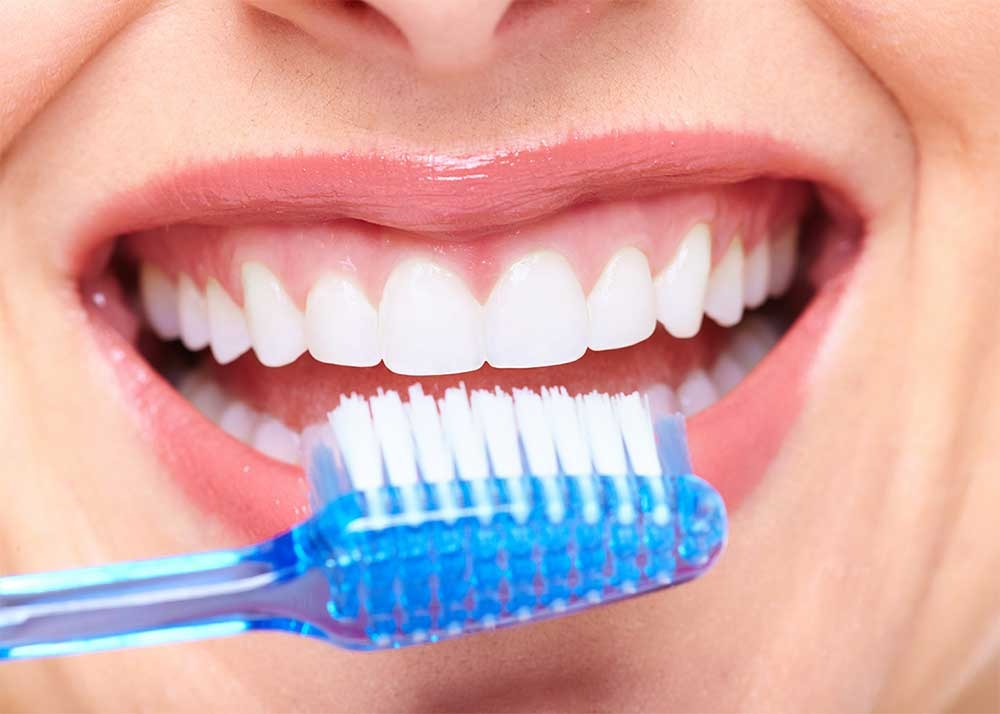

actividad guiada
¿cuantas veces se deben cepillar los dientes al dia?
¿cuales son las tecnicas de cepillado?
La tecnica de cepillado recomendada es la de bass, que consiste en colocar el cepillo a 45° respecto a la encia, realizando movimentos vibratorios suaves para limpiar el surco gingival
agrega una imagen de una persona cepillandose los dientes

agrega un video de tecnica de cepillado